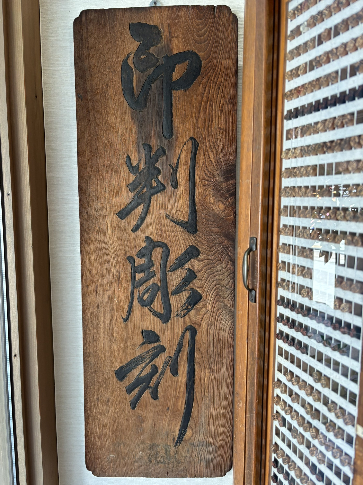
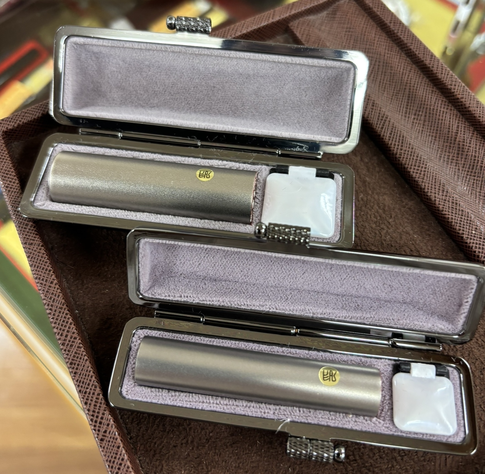

What is Hanko?
In Japan, hanko are used to show identity or approval in different situations. These are several types of hanko depending on how formal or important the situation is.
History
A personalized Hanko is a traditional Japanese seal with your own name written in Japanese characters. A personalized Hanko can turn your own name into a meaningful souvenir connected to Japanese language and culture.

Types and Usage
There are several types of hanko, each used in different situations. The table below shows the main purpose and common examples.
| Type | Main Use |
|---|---|
| Jitsuin (実印) |
|
| Ginkouin (銀行印) |
|
| Mitomein (認印) |
|
